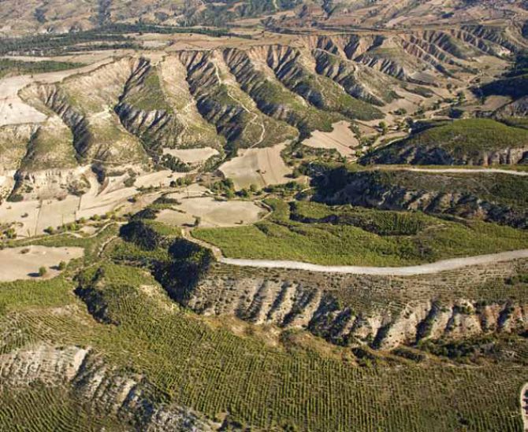
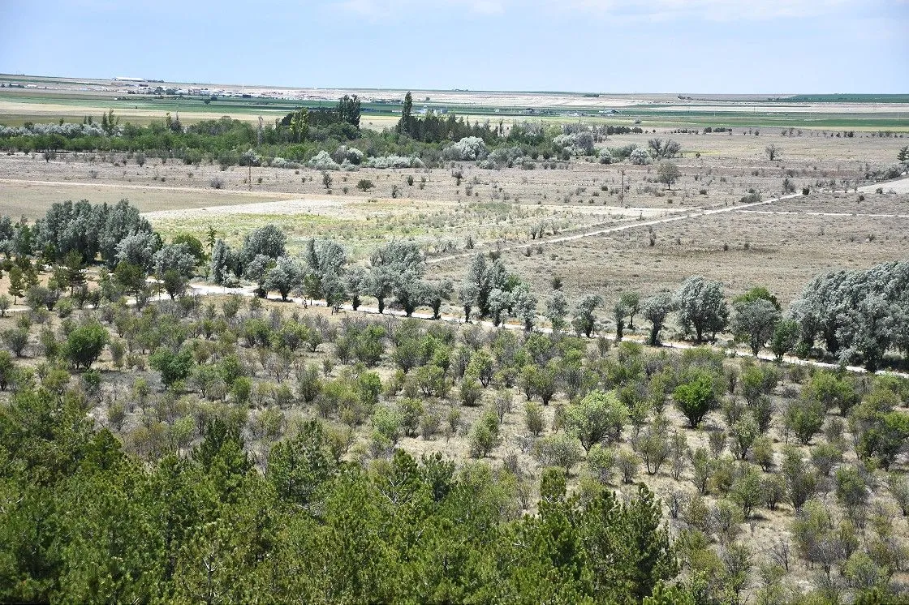
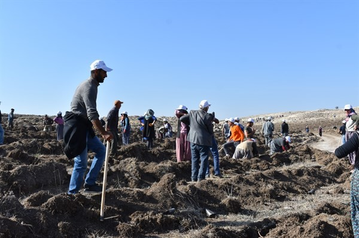
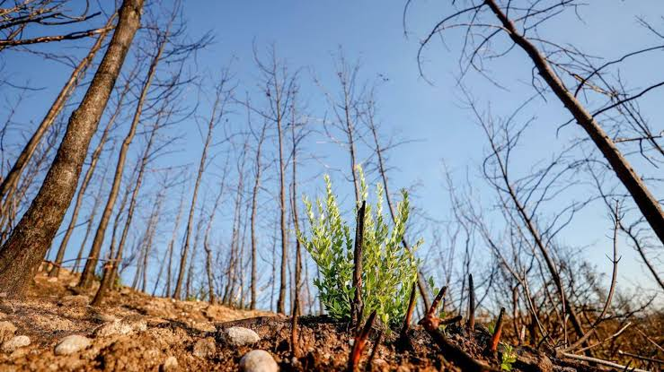
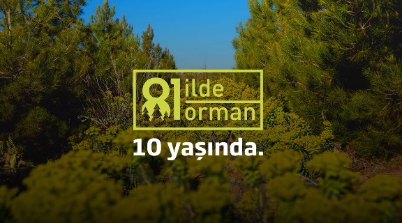
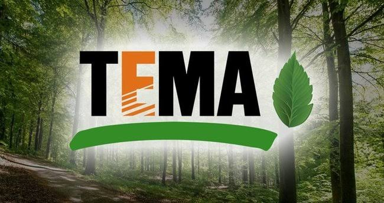
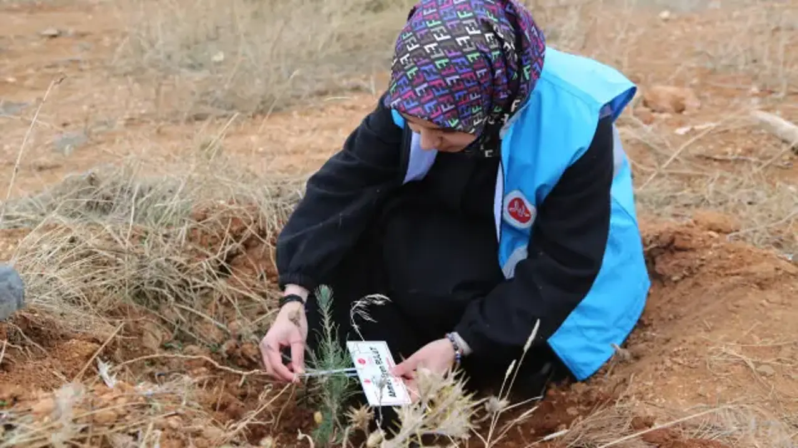

Ormanlar İçin Yapılmış Çalışmalar
-
Ağaçlandırma ve Erozyon Kontrolü Seferberliği (2008-2012)
Bu seferberlikle ağaçlandırma ve erozyon kontrolü çalışmaları en üst seviyeye ulaştı. 2012 sonuna kadar 7.889.301 hektar alanda ağaçlandırma, erozyon kontrolü, rehabilitasyon ve mera ıslahı çalışması yapıldı.
-

-
Karapınar (Konya) Çölleşmeyle Mücadele
1960'larda rüzgâr erozyonu yüzünden göç tehlikesiyle karşı karşıya kalan Karapınar'da kamış perdeler, otlatma ve ardından kalıcı ağaçlandırma uygulandı. Yaklaşık 160 bin dekar alan çölleşmeden kurtarıldı.
-

-
Geleceğe Nefes / Milli Ağaçlandırma Seferberliği (2019'dan beri)
2019'da başlayan seferberlik kapsamında 11 Kasım Milli Ağaçlandırma Günü ilan edildi. 2025'te 517 milyon fidan ve tohum toprakla buluştu, 2026 için hedef 600 milyon olarak açıklandı. gelecegenefes.gov.tr üzerinden 30 milyon fidan sahiplenildi.
-

-
Manavgat Yangını Sonrası Ağaçlandırma (2021)
Manavgat'ta 72 ton kızılçam tohumu ekildi ve bölgeye 1,5 milyon fidan dikildi.
-

-
81 İlde 81 Orman (İş Bankası, OGM, TEMA Vakfı)
İlk aşamada 81 ilde yaklaşık 1.500 hektar alanda 2 milyon 205 bin fidan dikildi. Yeniden başlayan ikinci aşamada 5 yılda 2,2 milyon fidan dikilmesi ve 3 yıl bakım yapılması planlanıyor.
-

-
TEMA Vakfı
1992'de kurulan vakıf bugüne kadar 23 milyonu aşkın fidan dikti. 2021'deki "Yaşamı Yeniden Yeşerteceğiz" kampanyasında 12 milyonu aşkın fidan bağışı kabul etti. 1998'den beri yürüttüğü Meşe Projesi, Türkiye genelinde 1 milyon hektar meşe ormanı oluşturmayı amaçlıyor.
-

-
Türkiye Diyanet Vakfı "1 İyilik 1 Fidan"
OGM ile 6 Mayıs 2021'de imzalanan protokol çerçevesinde 29 ilde 35 hatıra ormanı kuruldu ve 925 bin 235 fidan dikildi.
-
